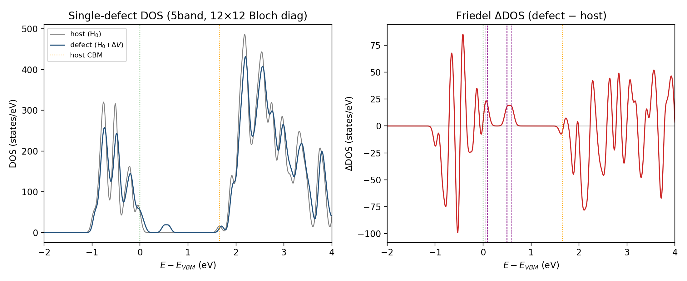
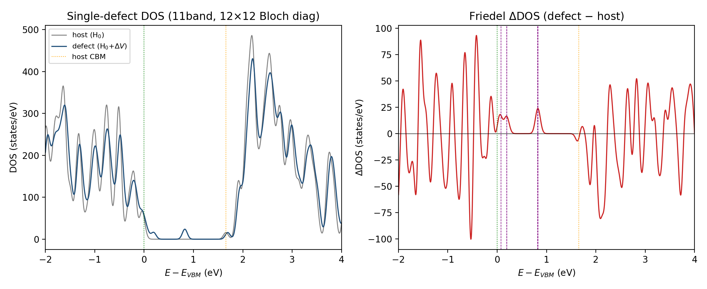
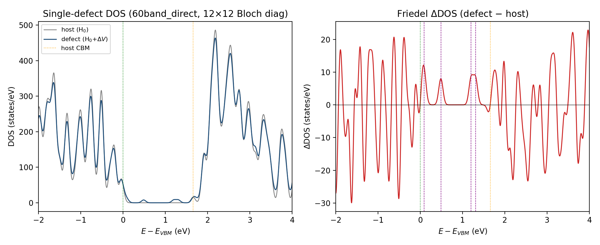

Contents
The literature electron–defect approach (e.g. eq. (S1) of the referenced works) writes a single-defect Hamiltonian
and obtains the defect density of states by diagonalizing it. Here we realize this for the S vacancy in monolayer MoS₂, reusing the difference potential $\Delta V$ and the Bloch matrix elements $g_{ij}$ from the EDI code. The object diagonalized is the total Hamiltonian in the coarse-grid Bloch basis $i=(n,\mathbf k)$,
On the coarse $12\times12$ k-grid this is equivalent to a single defect in a 144-cell supercell — larger than the explicit $6\times6$/$9\times9$ DFT supercells — but obtained from one dense diagonalization, because $\Delta V$ and the host bands are reused rather than recomputed self-consistently. This is the DOS form of the Koster–Slater / explicit T-matrix approach (the electronic mirror of the phonon defect T-matrix); $g_{ij}=\langle n\mathbf k|\Delta V|m\mathbf k'\rangle$ is the explicit Bloch $M$-matrix. The single defect breaks translational symmetry, so $g$ is dense in $(\mathbf k,\mathbf k')$.
1. Two ways to get $g_{ij}$ in EDI — use direct mode for explicit diagonalization
EDI can produce the coarse Bloch $M$ two ways:
- Wannierize flow (
wannierize=.true.+edmat_interp_from_file): builds Wannier functions and a fine-grid interpolation. The coarse $M$ is a by-product. Used for small band manifolds (5, 11) — but the Wannier minimization + fine-interp array are what made this path fight four separate memory/MPI walls (see §4). - Direct mode (
edmat_direct_from_file=.true.): EXCLUSIVE — auto-disables Wannier and interpolation, and computes $M(\mathbf k_i,\mathbf k_f)=\langle i|\Delta V|j\rangle$ directly from the wavefunctions for the band range set byband_ed='7-66'. This is the natural choice for an explicit (non-downfolded) calculation: no Wannier functions to localize, no fine-interp array, and it sidesteps every memory pitfall of the Wannier path. The 60-band result below uses direct mode.
2. Band-space convergence of the defect $e$ states
The defect $e$ doublet is acutely sensitive to the size of the band manifold: too small a space over-screens it, dragging it toward the VBM. Enlarging the explicit manifold systematically corrects this.

5-band (Mo:d, bands 13–17): the in-gap $e$ manifold is over-screened to ~0.5–0.6 eV.
11-band (Mo:d + S:p, bands 7–17): the $e$ manifold has risen to ~0.7–0.82 eV.
60-band explicit (direct mode, bands 7–66): host vs defect DOS (left) and Friedel ΔDOS (right). The $e$ manifold is now at 1.20–1.31 eV — converged into the DFT range.| manifold | in-gap defect levels ($E-E_{\rm VBM}$, eV) | $e$ level |
|---|---|---|
| 5-band (Mo:d) | 0.06, 0.09, 0.50, 0.60 | 0.5–0.6 (over-screened) |
| 11-band (Mo:d+S:p) | 0.08, 0.19, 0.82 (aligned) / 0.09, 0.70 (no-align) | 0.7–0.82 |
| 60-band explicit (direct) | 0.091, 0.486, 1.20, 1.31 | 1.20–1.31 |
| 9×9 DFT supercell | — | ~1.06 |
| 6×6 DFT supercell | — | ~1.15 |
| explicit 21-band $T$-matrix (claude-sternheimer) | a₁ +0.01, e +1.35 | ~1.35 |
The $e$ level climbs monotonically with band space — 0.5 → 0.8 → 1.3 eV — and the 60-band explicit value (1.20–1.31 eV) lands squarely inside the DFT-supercell / explicit-$T$-matrix range (1.06–1.35 eV). Over-screening is essentially eliminated once the conduction manifold is represented explicitly. This closes the loop on the well-known sensitivity: a downfolded 5-orbital model is not enough for the deep V$_S$ states; the explicit ~60-band calculation converges. (Alignment choice shifts levels by ~0.1 eV: 11-band sits at 0.82 eV with vacuum alignment, 0.70 eV with none; the 60-band run used pot_align='none'.)
3. Direct-mode setup (60-band)
edmat_direct_from_file = .true. ! EXCLUSIVE: skips Wannier + interp
filki_direct = 'kfull.dat' ! all 144 coarse k (12x12)
filkf_direct = 'kfull.dat' ! -> full 144x144 M block
band_ed = '7-66' ! 60 explicit bands (VBM manifold + conduction)
pot_align = 'none'Prerequisite: rerun the primitive nscf to nbnd=66. Run: 2 nodes, 26 ranks/node, MPICH_SMP_SINGLE_COPY_MODE=NONE; the edmat computation (panel broadcast) took ~50 min and wrote a 12 GB mos2_edmat_direct.dat (full $144^2\times60^2=7.5\times10^7$ matrix elements). The diagonalization is an $8640\times8640$ Hermitian eigenproblem (~15 min, ~4 GB).
4. Memory & parallelism reality
A correction to an earlier overestimate: the cached wavefunctions psir live on the primitive smooth FFT grid (dffts%nnr = 40×40×300 ≈ 4.8×10⁵), not the supercell $240^3$ cube grid. The true cache is ~12 GB (11-band) / ~67 GB (60-band) total, streamed via panel broadcast (each rank holds only its local k-points plus one received panel — O(nks), exactly as a streaming $\langle\psi_i|\Delta V|\psi_j\rangle$ should). Direct mode therefore fits comfortably in 2 nodes; its bottleneck is communication (broadcasting wavefunction panels), not memory.
The Wannierize path, by contrast, hit four independent walls on Kestrel (each masking the next), which is the practical reason to prefer direct mode:
- Full-core OOM → 26 ranks/node (reserve the full node with
--ntasks-per-node=104 --mem=0, launch fewer viasrun --ntasks-per-node=26). - Cray MPICH CMA crash (
process_vm_readv copy size mismatch) →MPICH_SMP_SINGLE_COPY_MODE=NONE. - Fine-interpolation array (
fine_nk=300→ ~174 GB on one rank) → not needed for diagonalization (fine_nk=12, or just use direct mode). - Misjudged psir cache (the 240³-grid overestimate above).
5. Caveats
- $\Delta V$ is the frozen, unrelaxed $6\times6$ supercell difference potential (neutral V$_S$, short-ranged; charged defects would need range separation).
- $g_{ij}$ is the bare Bloch matrix element.
- The 60-band manifold is well converged for the $e$ states (within the DFT spread); the absolute level still carries the usual PBE/Γ-only-SCF/coarse-$k$ uncertainties.
- $12\times12$ Bloch grid = 144-cell effective supercell.
Artifacts: /scratch/rjguo/edi_example/edi_run/edi/ — mos2_edmat_direct.dat (60-band direct $g_{ij}$, 12 GB), mos2_edmat_bloch.dat (11-band), diagonalize_dos.py (handles both header formats), defect_dos_{5band,11band,60band_direct}.{png,npz}.